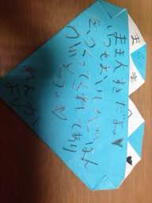
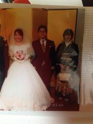
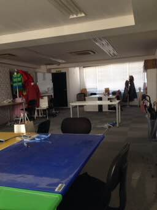

PARTICIPANTS:
DB ID: 0
Current name: You
Address book name: You
User name:
Phone Number:
Key:
DB ID: 629
Current name: Naoe Kuwano DICO
Address book name: Naoe Kuwano
User name: 桑野直恵
Phone Number: 09027430654
Key: 090 2743 0654
Messages:
2014/11/29 12:40:34, "0:You":
なっちゃんは子供のも1人に見えてた
2014/11/29 12:41:31, "0:You":
私が17時から池袋で飲んでる。
2014/11/29 12:42:12, "0:You":
その後は君たちのところへ行けたら行くのね〜
誘われてないけど
2014/11/29 12:46:32, "629:Naoe Kuwano DICO":
うん。おいでー。
2014/11/29 12:47:11, "0:You":
池袋が終わったら連絡をする
2014/11/29 13:38:14, "629:Naoe Kuwano DICO":
新宿で飲むみたい。
2014/11/29 13:54:15, "0:You":
いいね、近い！
行けるかも
2014/11/29 13:54:59, "0:You":
You sent a photo.
2014/11/29 13:55:30, "629:Naoe Kuwano DICO":
トニーでれでれ！
2014/11/29 14:58:22, "629:Naoe Kuwano DICO":
Naoe Kuwano DICO sent you a photo.
2014/11/29 14:59:10, "629:Naoe Kuwano DICO":
ショック！ワインの中で虫が溺れてるw
2014/11/29 15:36:03, "0:You":
お！やられた
2014/11/29 15:40:14, "629:Naoe Kuwano DICO":
Naoe Kuwano DICO sent you a photo.
2014/11/29 15:40:24, "629:Naoe Kuwano DICO":
二杯目！
2014/11/29 16:13:30, "629:Naoe Kuwano DICO":
そろそろ新宿に移動するね。
2014/11/29 16:46:03, "0:You":
も飲んでるの？！
2014/11/29 16:47:37, "629:Naoe Kuwano DICO":
うん。5時からね。
2014/11/29 17:04:45, "629:Naoe Kuwano DICO":
私の充電
あまりないかも。
もしつながらなかったら、さとこさんか北畠さんに連絡してね。
2014/11/29 17:08:16, "0:You":
了解です。
一応池袋の飲み会で顔を出します
2014/11/29 17:08:44, "629:Naoe Kuwano DICO":
いいよ〜たのしんでね！
2014/11/29 18:20:42, "629:Naoe Kuwano DICO":
今日ちゃんと会える？
2014/11/29 18:51:59, "0:You":
終わらない
会えないかも
2014/11/29 18:52:20, "629:Naoe Kuwano DICO":
いいよ。トニーなんか嫌い
2014/11/29 19:02:13, "0:You":
ごめん、ごめん
2014/11/29 19:02:36, "629:Naoe Kuwano DICO":
さとこさんに話していい？
2014/11/29 19:02:51, "0:You":
いいよ
2014/11/29 19:03:47, "629:Naoe Kuwano DICO":
どんなに遅くなってもいいから会って。
2014/11/29 19:05:13, "0:You":
ありがとう！
また連絡するね！
2014/11/29 19:15:20, "629:Naoe Kuwano DICO":
2人に言っちゃった。ごめんね。
2014/11/29 19:15:45, "0:You":
いいですよ
2014/11/29 19:20:14, "629:Naoe Kuwano DICO":
ありがとう。
2014/11/29 19:54:02, "629:Naoe Kuwano DICO":
2人とも、知ってたよ。
2014/11/29 19:55:35, "0:You":
どうやってばれたんだね〜〜
2014/11/29 19:56:00, "629:Naoe Kuwano DICO":
見てればわかるんだってー。
2014/11/29 21:54:28, "0:You":
終わった
今どこ？
2014/11/29 21:55:38, "629:Naoe Kuwano DICO":
新宿のカラオケにいるよ。
2014/11/29 21:56:34, "0:You":
いいね！
店の名前を知ってる？
2014/11/29 21:58:14, "629:Naoe Kuwano DICO":
カラオケ747っていうお店
2014/11/29 22:04:10, "629:Naoe Kuwano DICO":
もうすぐ移動するよ。
2014/11/29 22:04:33, "0:You":
ちょどいいね
2014/11/29 22:04:56, "629:Naoe Kuwano DICO":
どうする？4人で飲む？
2014/11/29 22:08:46, "0:You":
やめておこうか？
2014/11/29 22:09:41, "629:Naoe Kuwano DICO":
どっちでもいい。私は会いたい。
2014/11/29 22:10:37, "0:You":
すぎの行き先を決めたら
行くよ
2014/11/29 22:11:20, "629:Naoe Kuwano DICO":
うん。あと10分したらでるね。これたらきて。
2014/11/29 22:17:36, "0:You":
ゆっくりして
ここでも一杯飲むから
2014/11/29 22:25:03, "629:Naoe Kuwano DICO":
どこにいる？いまでます
2014/11/29 22:29:02, "0:You":
今池袋
2014/11/29 22:29:45, "629:Naoe Kuwano DICO":
恵比寿にこれる？
2014/11/29 22:30:01, "0:You":
いいよ
2014/11/29 22:30:41, "629:Naoe Kuwano DICO":
じゃあ恵比寿でね。
2014/11/29 22:33:53, "629:Naoe Kuwano DICO":
さとこさんと北畠さん手をつないでる。
2014/11/29 22:34:19, "0:You":
wwwww
2014/11/29 22:51:44, "629:Naoe Kuwano DICO":
トニーどこ？
2014/11/29 22:52:08, "0:You":
今行く
2014/11/29 22:52:24, "629:Naoe Kuwano DICO":
ん？まだ池袋？
2014/11/29 22:54:01, "0:You":
うん！
2014/11/29 22:54:41, "629:Naoe Kuwano DICO":
これるの？
2014/11/29 22:55:25, "629:Naoe Kuwano DICO":
恵比寿の駅前のバーにいます。トニーこれないなら帰ろうかな。
2014/11/29 22:55:33, "0:You":
うん！
今乗ってる
2014/11/29 22:57:28, "0:You":
23:16に恵比寿に着きます
--- from 駅すぱあと ---
2014/11/29 22:58:32, "0:You":
待たせてごめん。
女子会で色々あった
2014/11/29 22:59:00, "0:You":
なっちゃん！
2014/11/29 22:59:47, "629:Naoe Kuwano DICO":
ふうん。楽しそうね！
2014/11/29 23:00:52, "0:You":
女子会は久しぶり
みんないろいろな悩み事あった
2014/11/29 23:01:18, "0:You":
店の名前を知ってる？
2014/11/29 23:03:07, "629:Naoe Kuwano DICO":
AOYUZU
西口を出て、右に行ってすぐよ。
2014/11/30 03:22:15, "0:You":
今日は体力を使い切った。
すごい気持ちよかった。
2014/11/30 03:22:36, "0:You":
なっちゃん大好き
2014/11/30 03:23:03, "629:Naoe Kuwano DICO":
よかった。嬉しい。
私も幸せだったよ。
ありがとう。
2014/11/30 03:27:59, "629:Naoe Kuwano DICO":
本当に気持ちよかった。大好き。
ばれないように気をつけてね。
2014/11/30 03:29:12, "0:You":
私も好きだよ。
気を付けます。
お休み！
2014/11/30 03:30:36, "629:Naoe Kuwano DICO":
うん、おやすみ。
2014/12/01 10:06:18, "629:Naoe Kuwano DICO":
今日は家でお仕事です。
2014/12/01 11:21:41, "0:You":
お！忙しそうだな
2014/12/01 11:51:48, "629:Naoe Kuwano DICO":
仕事中にごめんね。こないだはトニーの本音がわかったよ。お友達に送ったLINEで。
2014/12/01 12:16:30, "629:Naoe Kuwano DICO":
それが私も本音かもね。旦那さんがしてくれないから、不満が溜まっていたのね…きっと
2014/12/01 12:17:34, "0:You":
そうかもね〜
2014/12/01 12:17:58, "629:Naoe Kuwano DICO":
好きじゃないんだね。
2014/12/01 12:18:02, "0:You":
重く考えないで
疑いのことが好き
2014/12/01 12:19:27, "0:You":
そうか？好きじゃないのかな
…考えさせて
2014/12/01 12:19:34, "629:Naoe Kuwano DICO":
わかってる。でもトニーのこともう信じられない。
2014/12/01 12:20:08, "0:You":
信じてよ〜
2014/12/01 12:21:43, "629:Naoe Kuwano DICO":
トニーは私のこと好きじゃない。そんなの最初からわかってます。でも楽しかったからいいよ。高校生にもどれたし。ありがとう。
2014/12/01 12:22:36, "0:You":
ちょい待って！別れるのが早い
2014/12/01 12:23:07, "629:Naoe Kuwano DICO":
ツンデレじゃないよ！
2014/12/01 12:24:39, "629:Naoe Kuwano DICO":
ごめんね。私、大人の恋ができないの。辛くなっちゃうの。ほんとにごめんね。
2014/12/01 12:26:24, "629:Naoe Kuwano DICO":
私から誘ったから私から終わるね。これ以上は無理。
2014/12/01 12:27:30, "0:You":
別れないで
何も問題がないし
大丈夫だよ、続けて
2014/12/01 12:28:57, "629:Naoe Kuwano DICO":
気持ちがいいから？ただそれだけ？私もそうやって割り切ればいいのかな…
2014/12/01 12:52:58, "0:You":
離れると落ち着いてる。
近くにいるとキスがしたくてたまらない
2014/12/01 13:41:22, "0:You":
別件だけど〜
昨日からエンドちゃんが話さないしソファで寝ってる
2014/12/01 13:41:41, "0:You":
ばれたのかな？
2014/12/01 13:41:46, "629:Naoe Kuwano DICO":
うん
2014/12/01 13:42:35, "0:You":
ラインも返事しない。
怒ってるのかな
2014/12/01 13:42:43, "629:Naoe Kuwano DICO":
うん
2014/12/01 13:43:00, "0:You":
早く治りそう？
2014/12/01 13:43:12, "629:Naoe Kuwano DICO":
なにが？
2014/12/01 13:43:23, "0:You":
怒ってること
2014/12/01 13:43:54, "629:Naoe Kuwano DICO":
わからない。トニーがあべさんの奥さんに言ったからでしょ？
2014/12/01 13:44:32, "629:Naoe Kuwano DICO":
どうして言うのかな？どうして2人の女性を悲しませるの？
2014/12/01 13:44:48, "0:You":
そっちじゃない、ね
ばれたら、さとこちゃんからしかない
2014/12/01 13:45:36, "629:Naoe Kuwano DICO":
それは絶対にない。さとこさんはそういうことは絶対言わない人だよ。
2014/12/01 13:45:52, "0:You":
それか、帰った時、私が女の匂いをしてたかも
2014/12/01 13:47:10, "0:You":
ばれた、かもね。
花束を買って帰るだけで治るといいねー
2014/12/01 13:50:04, "629:Naoe Kuwano DICO":
それか、携帯を見た？
2014/12/01 13:50:57, "629:Naoe Kuwano DICO":
ばれたら、もう続けられないね。
2014/12/01 13:55:51, "629:Naoe Kuwano DICO":
トニーが浮気して、私からお願いしてきたって、どうして友達に言うの？私も怒ってる。ひどいよ。
2014/12/01 13:58:02, "0:You":
んー
今日は怒られっぱなし
2014/12/01 13:59:27, "0:You":
友だちに言うったって大丈夫よ。
共通の友だちはいないし、彼女も浮気をしたりするから、彼女が言うってない
2014/12/01 14:00:07, "0:You":
私は彼女の旦那さんの友だち
2014/12/01 14:00:16, "0:You":
ひろみくん
2014/12/01 14:00:53, "0:You":
とりあえず、花束で治るかを試してみます。
2014/12/01 14:01:37, "0:You":
エンドちゃんが持ってる子供を失いたくない
2014/12/01 14:02:48, "629:Naoe Kuwano DICO":
そうだね。
私も奥さんの話聞くの辛いの。ごめんね。何も言えない。
2014/12/01 14:04:40, "629:Naoe Kuwano DICO":
私だって昨日からずっと胸が苦しいよ。でも誰にも言えなくて1人で泣いてるのに。
2014/12/01 14:05:02, "0:You":
まじか？！
ごめん
なっちゃんの立場を考えてなかった。
気にしないで、すぐ直せるから。
2014/12/01 14:06:44, "629:Naoe Kuwano DICO":
奥さんはもっと辛いとおもう。私のことはもう考えなくていいです。
2014/12/01 14:18:13, "629:Naoe Kuwano DICO":
トニーが前、初恋みたいって言ってたよね。覚えてる？あれ、本当だったのかな？嘘ついた？それだけ教えて？
2014/12/01 14:20:58, "0:You":
本当にだよ。
キスの感動は大きくて漏らしたことあるぐらいなので。
今までの子と違う。
2014/12/01 14:21:55, "629:Naoe Kuwano DICO":
それを聞いただけで、トニーとのことはいい思い出にできる。ありがとう。
2014/12/01 14:24:28, "0:You":
のちらこそありがとう。
一カ月だけで『思い出』になっちゃいました、ね！
2014/12/01 14:25:01, "629:Naoe Kuwano DICO":
短いね。
2014/12/01 14:26:23, "0:You":
3ヶ月以内はノカウントだから、付き合ってないことになる。
2014/12/01 14:26:47, "629:Naoe Kuwano DICO":
そうなの？なにそのルールw
2014/12/01 14:27:06, "629:Naoe Kuwano DICO":
じゃあ私たち、何もなかったのねw
2014/12/01 14:27:39, "0:You":
私がいろんなルールを作ったりするのよ
2014/12/01 14:29:13, "629:Naoe Kuwano DICO":
思い出にしてもいいよね？
2014/12/01 14:32:31, "0:You":
うん。
次はついひじですか？
2014/12/01 14:32:37, "629:Naoe Kuwano DICO":
トニーとまたしちゃったら終わりがきそうで怖くてなかなかできなかった。
2014/12/01 14:32:57, "629:Naoe Kuwano DICO":
怒ってる？そんなこと言わないで！
2014/12/01 14:35:14, "629:Naoe Kuwano DICO":
私は続けたいけどトニーたちがそんな状態って聞いたら、続けたいなんて言えないよ。
2014/12/01 14:40:00, "629:Naoe Kuwano DICO":
私だって胸が苦しくて初恋みたいなんだよ。一緒だよ。
2014/12/01 14:48:12, "0:You":
やっぱり、続けましょう！
2014/12/01 14:50:20, "629:Naoe Kuwano DICO":
うん。やっぱり好きな気持ちは止められないです…
2014/12/01 15:12:55, "0:You":
やった！
2014/12/01 15:13:05, "0:You":
None
2014/12/01 15:14:41, "629:Naoe Kuwano DICO":
ごめんね。めんどくさくて…
トニーかわいい。
2014/12/01 15:15:02, "629:Naoe Kuwano DICO":
2014/12/01 15:37:41, "629:Naoe Kuwano DICO":
奥さんのことだけど…
妊娠中は些細なことで不安定になるの。私もそうだったからわかるよ。
2014/12/01 22:04:59, "0:You":
エミリオさんが知ってる
2014/12/01 22:08:54, "629:Naoe Kuwano DICO":
さとこさんが言っちゃったみたい
2014/12/01 22:09:19, "629:Naoe Kuwano DICO":
ごめんなさい。わたしのせい
2014/12/01 22:10:48, "629:Naoe Kuwano DICO":
こないだ、さとこさんちに泊まらせてもらったことにしたの。それで、うちの主人がもしエミリオさんにお礼を言っちゃったらまずいから、話を合わせるためにエミリオさんに言ったんだって。ごめんね。
2014/12/01 22:10:57, "0:You":
w
気にしない
2014/12/01 22:11:21, "629:Naoe Kuwano DICO":
エミリオさんも気にしないって。
2014/12/01 22:11:31, "0:You":
そうそう
2014/12/02 09:37:18, "0:You":
You sent a photo.
2014/12/02 09:37:27, "0:You":
オフィスがきれい
2014/12/02 09:38:14, "629:Naoe Kuwano DICO":
ほんと〜きれい！
いいなー昨日楽しかった？
娘が病気になって行けなかったよ…
2014/12/02 09:39:48, "0:You":
そうなの？！
困った
2014/12/02 09:40:48, "629:Naoe Kuwano DICO":
大丈夫！今日はちゃんと学校行ったよ。
2014/12/02 10:09:30, "629:Naoe Kuwano DICO":
私、会社やめなきゃいけないみたい。さとこさんにいわれましたあ
2014/12/02 10:10:31, "0:You":
私のせいかも
2014/12/02 10:11:13, "0:You":
秘密にすればよかったかもね
2014/12/02 10:47:01, "629:Naoe Kuwano DICO":
大丈夫です。もうちょっとがんばります。
2014/12/02 10:51:30, "0:You":
ランチで話そう
2014/12/02 10:56:58, "629:Naoe Kuwano DICO":
トニーは悪くない。全部私です。
2014/12/02 14:10:10, "0:You":
駅に向かう
2014/12/02 14:12:47, "0:You":
アナログカフェにする？
2014/12/02 14:14:56, "629:Naoe Kuwano DICO":
うん。そのほうがいいね。
2014/12/02 14:15:40, "0:You":
先に入ってる
2014/12/02 14:17:01, "629:Naoe Kuwano DICO":
話すぐおわるからごめ
2014/12/02 14:17:04, "629:Naoe Kuwano DICO":
んね
2014/12/02 16:05:15, "0:You":
女って腹黒いですね〜
2014/12/02 16:17:49, "629:Naoe Kuwano DICO":
どんなに長く働いてもアガタが大変だと思って
毎日4時間分しかつけていなかった。ほぼ毎日働いてももらえるのは四万かごまんです。それでこんなに言われなきゃいけない？しかも主人にまで全部言って。直接言ってくれればいいのに。本当に辛いです。
2014/12/02 16:26:02, "629:Naoe Kuwano DICO":
パワハラだね。
2014/12/02 16:37:08, "629:Naoe Kuwano DICO":
主人に相談しておいて、主人の悪口もいわれた。悔しくて言い返したかったけど、我慢したよ。
2014/12/02 16:38:57, "629:Naoe Kuwano DICO":
彼女に私の全てを否定されて、死にたいくらい辛くなった。
2014/12/02 16:42:33, "0:You":
マジで旦那とも話して〜
家族を守るのが大切
なのがあったも奥さんの見方になるしかない
2014/12/02 16:43:39, "629:Naoe Kuwano DICO":
彼は完全にわたしの味方。彼女がおかしいって。でもどんなに頑張っても、評価するのは他人。
2014/12/02 16:56:00, "629:Naoe Kuwano DICO":
彼は物凄く怒ってる。彼は、エミリオさんが失敗したときに助けてあげたの。で、それ以来の付き合い。で、人を探してるって聞いたから私を紹介しただけ。採用したのは彼女。彼に言うのは間違ってる。
2014/12/02 17:01:43, "0:You":
そうか、そうか？！
2014/12/02 17:02:54, "0:You":
やきもちかな〜
2014/12/02 17:03:21, "0:You":
利益がでない、とか
2014/12/02 17:03:34, "629:Naoe Kuwano DICO":
さとこさんは知らないかもしれないけど、エミリオさんにたくさん仕事紹介してるんだよ。
2014/12/02 17:03:34, "0:You":
いろいろあるんでしょうね。
2014/12/02 17:06:02, "0:You":
エミリオはグチは言わないと思う。
まだエミリオの方がいい人かも
2014/12/02 17:06:43, "629:Naoe Kuwano DICO":
なのに彼の悪口を言って、彼にはわたしの悪口…。悲しい。
2014/12/02 17:07:52, "629:Naoe Kuwano DICO":
ごめんね。愚痴をいって。私がやめれば済むことだよね。
2014/12/02 17:08:53, "0:You":
関係のないかもしれないけど。
さとこちゃんは浮気をされまくりなの。
さとこちゃんはそれで頭がおかしくなってると思う。
2014/12/02 17:09:36, "629:Naoe Kuwano DICO":
彼女、メンタルがおかしくなってるとおもうよ。自分で気づいてないけど。
2014/12/02 17:12:47, "629:Naoe Kuwano DICO":
ごめんね。話を聞いてくれてありがとう。そのまま帰ったらおかしくなってた。
2014/12/02 17:14:05, "0:You":
なっちゃんは絶対おかしくならないで。
何を言われても理不尽になっちゃダメよ
2014/12/02 17:18:15, "629:Naoe Kuwano DICO":
うん。ありがとう。
すごく悔しいけれど、我慢します。わかってくれる人はいるから。
2014/12/02 17:39:45, "629:Naoe Kuwano DICO":
言い訳になるけど、
私20代の時30万はもらってた。でも今多くても5万で仕事して、performanceは悪くないとおもう。少なくとも事務処理に関しては彼女より全然速く正確にできる。
スペインフェスでも売り上げ24万でほとんど私の売り上げだし。
それで、なんでそこまでひどく言われるのかわからないし、私を潰そうとしてるとしか思えないの。
本当にやる気をだしてほしいなら、主人ではなく私に言うべきだし。
2014/12/02 17:45:00, "0:You":
そうですね〜
ストレス解消のためだ。
責任が多い人はそうなっちゃう。
2014/12/02 17:46:56, "0:You":
大切なのが、
さとこは敵ではないです。
やり方が悪いか、コミュニケーションが悪いか。
2014/12/02 17:48:10, "629:Naoe Kuwano DICO":
さとこさんにはとても感謝してます。世界が広がったし、仕事させてもらって嬉しかった。
2014/12/02 17:49:10, "0:You":
さとこちゃんが性格が悪いって分かった上で
一緒にお金を作れる方法を考えましょう
2014/12/02 17:50:28, "0:You":
３人とも仕事ができる人間です。
難しい人と仕事をするのが慣れ
2014/12/02 17:54:10, "0:You":
私が一番心配を知ってるのがなっちゃんの仕事を安く見られること。
2014/12/02 17:55:34, "629:Naoe Kuwano DICO":
お給料が安いのは彼女もよくわかってるみたい。
2014/12/02 17:58:08, "629:Naoe Kuwano DICO":
しかも私、半分くらいは、アガタに使ってるの
2014/12/02 18:00:16, "0:You":
アガタって？
運行とか、経費とかですか？
2014/12/02 18:00:34, "629:Naoe Kuwano DICO":
アガタのもの買ってる。
2014/12/02 18:00:55, "0:You":
なるほど、ね
2014/12/02 18:03:57, "629:Naoe Kuwano DICO":
トニーからみて、私はそんなにやる気がないの？まわりを嫌な気持ちにさせてたの？
2014/12/02 18:07:06, "0:You":
「黙ってるから、考えてないんじゃない？！」って思ったりしてた。
2014/12/02 18:07:43, "629:Naoe Kuwano DICO":
そっかあ。
2014/12/02 18:07:44, "0:You":
キズを付けちゃって、ごめん
2014/12/02 18:08:33, "629:Naoe Kuwano DICO":
速く事務処理をするのが私の仕事だとおもって、おしゃべりしちゃいけないって思っていた。
2014/12/02 18:10:20, "629:Naoe Kuwano DICO":
あと話してる内容がくだらないことばかりだから、参加しなかった。
2014/12/02 18:10:50, "0:You":
さとこちゃんは１人で考えてる。
１脳だけですよ。
北林はあんまりにも考え方が古くてファションに向いてない。
2014/12/02 18:11:48, "629:Naoe Kuwano DICO":
2人とも、私がいないかのように話してるから、入っちゃいけないと思ってたの。それが気に入らなかったのね。わかった。
2014/12/02 18:12:41, "0:You":
それはアガタの弱い点です。
そこはなっちゃんが頭を回していい津込み出したりすれば。
2014/12/02 18:14:30, "0:You":
明らかに北林よりいい意見は出せる。
女＋若い＋ネット販売で買い物をしてる友達いっぱいいそう
2014/12/02 18:15:34, "0:You":
今すぐなっちゃんのアピール出来るところを洗い出しましょう
2014/12/02 18:17:00, "629:Naoe Kuwano DICO":
会社にいる間は、なにか結果をだせるようにがんばるね。
2014/12/02 18:18:55, "0:You":
逆転をしてなっちゃんがアガタの台になったら面白い
2014/12/02 18:19:38, "629:Naoe Kuwano DICO":
スペインフェスでは私が結構売り上げたから、さとこさんびっくりしたみたい。
2014/12/02 18:20:47, "629:Naoe Kuwano DICO":
私がアガタでできることは常に考えてるよ。家でも仕事してる。
2014/12/02 18:22:04, "0:You":
いいですね〜
2014/12/02 18:24:11, "0:You":
昔いは数学の先生からアドバイスをもらいました。そのアドバイスをそのままなっちゃんに回す
「周りの人を考えないで自己ベストをします」
2014/12/02 18:24:45, "629:Naoe Kuwano DICO":
ありがとう！
2014/12/02 18:28:44, "629:Naoe Kuwano DICO":
もうちょっと続けたほうがいいのかな。もう彼女とは一緒に仕事できないと思ったけど。
2014/12/02 18:35:08, "629:Naoe Kuwano DICO":
トニーありがとう。あと今日、キスしちゃってごめんね。
2014/12/02 18:35:31, "0:You":
いつでもしてして
2014/12/02 18:38:54, "629:Naoe Kuwano DICO":
彼女が1番怒ってるのはトニーとのことだから、もう別れたことにしてる。ランチとかはもうできないけど…
私は好きなままでいる。
2014/12/02 18:40:53, "0:You":
分かった
大丈夫だよ
2014/12/02 18:41:31, "629:Naoe Kuwano DICO":
好きでいてもいいよね…？
2014/12/02 18:42:25, "0:You":
うん、私も
2014/12/02 18:45:04, "629:Naoe Kuwano DICO":
気持ちはそんなに単純じゃないです。ごめんね。
2014/12/02 18:45:46, "0:You":
好きでいいと思う
幸せならいい
2014/12/02 18:48:21, "629:Naoe Kuwano DICO":
こうやってトニーに話聞いてもらって幸せ。そうじゃなかったら私、すぐ辞めてる。
2014/12/02 18:51:03, "0:You":
None
2014/12/03 09:15:06, "629:Naoe Kuwano DICO":
おはよう。私やっぱりもう会社に行けないかもしれない。ごめんね。
2014/12/03 09:16:31, "0:You":
おはよう！
健康が一番大切。
ストレスは健康に悪い
2014/12/03 09:18:38, "629:Naoe Kuwano DICO":
体がおかしくなってきた。心臓がドキドキして、とまらない。
2014/12/03 09:19:05, "0:You":
んー
2014/12/03 09:19:50, "0:You":
今日はこたつとみかんですね
2014/12/03 09:26:21, "629:Naoe Kuwano DICO":
でもトニーが昨日アドバイスくれたから、もう少しだけ頑張ってみようと思っています。それでもダメだったら、辞めます
2014/12/03 09:27:04, "629:Naoe Kuwano DICO":
さとこちゃんからのメッセージ、トニーも読んでください
2014/12/03 09:27:42, "629:Naoe Kuwano DICO":
おはようございます。
本日出勤前にお伝えしなければいけないことをメールさせていていただきます。
まず、実は最近の直江さんの勤務態度が携帯をいじってばかりいたり
ぼっとしたりで私的にまた病気なのかとご主人に
このまま続くならやめてもらうことも視野に入れご相談させてもらっていました。
先週の木、金も本当は大変忙しく、徹夜で作業したくらいでしたが
命を懸けてやっている私の仕事の一番大切な時に
目の前で仕事をしない人が居ると大変士気が落ちるので
出勤をしないでもらいました。
そのような中で土曜日のお話を伺い状況は呑み込めましたが
友人としては傾聴することはできますが
私も経営側ですので言わなければいけないことはお伝えします。
先ず、会社がグアムに連れて行ったのは、これからもみんなで頑張って行こうというためで
そこで起きたプライベートなことで仕事ができなくなるというのは、
セッティングした会社側に大変失礼だということ。
それから、私情でそこまで勤務不能になるのは常識範囲外ということを理解してください。
まだ精神的に落ち着かないと思いますが
職場ではごく普通に、携帯も必要時以外はみず時間内精一杯
働くこと（ごく当然のことですが）へのご理解をお願いいたします。
（でもフィエスタでは本当に大活躍でありがとうございました）
友人としてもご相談には乗りたいところですが
彼の奥様もまた私の友人ということ、そしてご主人も大切な知人であることもあり
私ができる範囲がかなり限られていることも重々ご理解をおねがいいたします。
一応、今後の勤務態度も含めこれが第一回目の進退に関する通知です。
能力があるので精神的なブレで道を失うことが大変もったいないと見ています。
以上、マネージャー小野としてのご連絡でした。
2014/12/03 09:30:35, "629:Naoe Kuwano DICO":
私がうまくやれませんでした。本当にごめんなさい
2014/12/03 09:35:03, "0:You":
①これから携帯をいじらないこと。
②常に『やりましょうか？』って言うこと。
この2点だけでいい。
2014/12/03 09:35:26, "0:You":
楽勝だ
2014/12/03 09:36:31, "0:You":
さとこちゃん側の気持ちはこれで分かった
2014/12/03 09:45:17, "629:Naoe Kuwano DICO":
とりあえず、今日は行きます。
2014/12/03 09:48:55, "629:Naoe Kuwano DICO":
こんなに問題を大きくしないで、普通に私に注意してくれればよかった。
2014/12/03 09:53:53, "0:You":
そうだね。
直接に�一言を言えば終わったのに
2014/12/03 10:52:40, "629:Naoe Kuwano DICO":
たぶん一つだけ誤解がありました。
私、翻訳作業をしたり、調べ物をするときに、携帯の辞書機能を使ったり、携帯で調べることがよくあります。
携帯で私用メールをすることはほとんどないのでおかしいな、って思っていたの。
PCの画面で二重に開くのが面倒なときはよくそうしてます。
それが、携帯をよくいじってる、って誤解されたのかもしれない。
2014/12/03 10:57:52, "0:You":
そうか、そうか？
2014/12/03 11:00:19, "629:Naoe Kuwano DICO":
スマホで仕事することが今は当たり前なのに、
スマホ＝遊びって思われたのかもね。
2014/12/03 11:11:18, "0:You":
ま、ねー
勘違いですね。
2014/12/03 13:13:52, "629:Naoe Kuwano DICO":
トニーさん！
自分のことで精一杯で、お誕生日忘れていたよ。ごめんね！
2014/12/03 13:14:08, "629:Naoe Kuwano DICO":
おめでとうございますハッピーバースデー
2014/12/03 13:14:39, "0:You":
ありがとう！
2014/12/03 13:15:16, "629:Naoe Kuwano DICO":
昨日家に入れてもらえた？ちょっと気になってます。
2014/12/03 13:23:03, "0:You":
エンドちゃんが宮城にいるから、私が1人で帰って寝た。
2014/12/03 21:47:21, "0:You":
今日は全然話せてない、ね！
仕事はアピール出来た？
さとこの態度治った？
2014/12/03 21:49:55, "629:Naoe Kuwano DICO":
うん、まあまあアピールできたとおもう。
さとこさんから、朝へんなチャットはきたけど、他の人といるときは普通よ。
2014/12/03 21:51:55, "629:Naoe Kuwano DICO":
まだ昨日のこと思い出して胸が苦しいの続いてるし食欲はないけど、頑張れる。やれるところまで頑張ってみるつもり。
2014/12/03 21:53:20, "629:Naoe Kuwano DICO":
トニーは今日素敵なお誕生日が過ごせたかな？
ほんとにおめでとう♩
2014/12/03 21:58:32, "0:You":
ありがとうございます！
なっちゃんがトラウマにならない程度に頑張ってね。
やめても私が連絡を止めないから、大丈夫だよ。
2014/12/03 22:00:17, "629:Naoe Kuwano DICO":
ありがとう。
今はね、さとこさんのことはネタだよ。またへんなこと言ってるって。夫婦で笑ってるのw
2014/12/03 22:02:19, "629:Naoe Kuwano DICO":
大人だから、仕事ではうまくやるし、心配しないで。
2014/12/03 22:02:48, "0:You":
よかった！
『食欲がない』って心配してた
2014/12/03 22:03:40, "629:Naoe Kuwano DICO":
食欲はなくて無理やり詰め込んでるだけ。でもきっとそのうち治るよー。
2014/12/03 22:04:16, "0:You":
2014/12/04 10:15:17, "629:Naoe Kuwano DICO":
会社に入れない。
2014/12/04 10:18:17, "629:Naoe Kuwano DICO":
トニーいないんだね。宮城かな。気をつけてね。
2014/12/04 10:25:15, "0:You":
ごめんね
仙台にいる
お葬式
2014/12/04 10:38:25, "0:You":
今日もいい子ぶりしてて。
また早く会いたい。
2014/12/04 10:40:58, "629:Naoe Kuwano DICO":
おばあちゃんのご冥福をお祈りしています。
お疲れさま。気をつけてね。
私のことは心配しないで！
2014/12/06 10:41:46, "0:You":
おはよう！
元気でやってる？
2014/12/06 10:44:46, "629:Naoe Kuwano DICO":
おはよう。元気だよ！
2014/12/06 10:55:00, "0:You":
風邪を引かないで、ね！
2014/12/06 10:55:34, "629:Naoe Kuwano DICO":
ありがとう。トニーは風邪大丈夫？
2014/12/06 10:56:49, "0:You":
ごほん！、ごほん！まだ出てる。
2014/12/06 10:57:43, "629:Naoe Kuwano DICO":
飴なめて、あったかくして、ちゃんと休んでね！
2014/12/06 11:08:49, "0:You":
うん！
治るのになっちゃんとエッチしたほうがいい？
2014/12/06 11:09:33, "629:Naoe Kuwano DICO":
しないほうがいいよw
2014/12/06 11:09:52, "0:You":
OK
2014/12/06 11:19:43, "629:Naoe Kuwano DICO":
ドキドキしちゃうから。
2014/12/06 11:21:38, "0:You":
おら！
なっちゃんも仕事をする時にドキドキするのよ〜
私もしたい
2014/12/06 11:29:01, "629:Naoe Kuwano DICO":
トニーのこと好きだから我慢するのよ。
2014/12/06 11:30:52, "0:You":
素敵！
なっちゃん大好き！
2014/12/06 11:36:57, "629:Naoe Kuwano DICO":
2014/12/06 11:47:33, "0:You":
Me too
2014/12/06 11:53:44, "0:You":
Crossy Road - Endless Arcade Hopper by HIPSTER WHALE
https://appsto.re/jp/-nng3.i
2014/12/06 11:54:05, "0:You":
今遊んでる
2014/12/06 12:24:49, "629:Naoe Kuwano DICO":
わたしもこれｋらちょっとずつゲームで遊ぼうかな
2014/12/06 12:46:11, "629:Naoe Kuwano DICO":
すぐ死んじゃうw
レゴっぽくて可愛いね。
2014/12/06 12:47:03, "0:You":
車に引かれるw
2014/12/06 12:47:43, "629:Naoe Kuwano DICO":
そう。引かれてつぶれるw
2014/12/08 08:05:43, "0:You":
起きてるの？
2014/12/08 08:06:15, "629:Naoe Kuwano DICO":
おはよ。起きてるよ〜
2014/12/08 08:11:51, "0:You":
今日も仕事？
2014/12/08 08:14:45, "629:Naoe Kuwano DICO":
今日はお休み
2014/12/08 08:22:08, "629:Naoe Kuwano DICO":
嘘つきました。仕事です！
2014/12/08 08:24:29, "0:You":
よかった！
行きたくなかったけど、
なっちゃんがいたら行きます。
2014/12/08 08:24:57, "629:Naoe Kuwano DICO":
具合悪いの？
2014/12/08 08:29:15, "629:Naoe Kuwano DICO":
昨日も会社行ったよ。車で届けるものがあって。
2014/12/08 08:31:04, "0:You":
そうか？！
ゴホンゴホンがまだ続いてる。
2014/12/08 08:32:11, "629:Naoe Kuwano DICO":
私のキスで治してあげたい。
無理しないで。
2014/12/08 08:40:52, "0:You":
キスだ！キスだ！
2014/12/08 15:32:22, "0:You":
ありがとうね！
息を通りやすくなりました
2014/12/08 16:42:59, "629:Naoe Kuwano DICO":
ほんとに？私いいナースになれるかもね〜
2014/12/08 17:05:16, "629:Naoe Kuwano DICO":
私も会えて嬉しかった。ありがとう。
2014/12/08 17:25:41, "0:You":
よかった、ね！
いつもあせってるのが申し訳ない
2014/12/08 17:42:44, "629:Naoe Kuwano DICO":
全然。もう会えないって思ってたから。
2014/12/09 09:11:27, "629:Naoe Kuwano DICO":
お仕事頑張ってね。
2014/12/09 09:39:13, "0:You":
うん！ありがとう
2014/12/09 09:44:15, "629:Naoe Kuwano DICO":
子どもたちがあのゲームにはまってるの。
2014/12/09 09:44:48, "0:You":
やっぱり！！
2014/12/09 09:45:27, "629:Naoe Kuwano DICO":
今日は下の子が風邪で休んでるから、あのゲームやりたいんだって。
2014/12/09 09:50:40, "0:You":
風邪が早く治るといいね。
とにかく、あのゲームで満足でしょう。
2014/12/09 09:50:57, "0:You":
私も風邪仲間かもよ
2014/12/09 09:51:17, "629:Naoe Kuwano DICO":
あれ？私のキスが足りなかったかなぁ？
2014/12/09 09:57:04, "0:You":
足りなかったみたい。
やり直しをしましょう
2014/12/10 16:44:20, "629:Naoe Kuwano DICO":
やり直しできたね！
2014/12/10 16:46:42, "0:You":
うん！嬉しかった！
2014/12/11 16:01:54, "0:You":
向かってるよ
2014/12/11 16:02:52, "629:Naoe Kuwano DICO":
ありがとう。
2014/12/11 16:07:01, "0:You":
どこ？
2014/12/11 16:07:18, "629:Naoe Kuwano DICO":
こないだのとこ
2014/12/11 16:07:46, "629:Naoe Kuwano DICO":
反対からきた？
2014/12/11 16:08:22, "0:You":
うん
2014/12/11 16:08:53, "629:Naoe Kuwano DICO":
じゃいくね。いつも間違える…
2014/12/11 16:08:54, "0:You":
今MUJI印
2014/12/11 16:09:15, "629:Naoe Kuwano DICO":
あれ？さっきいたのにー！
2014/12/11 16:09:26, "629:Naoe Kuwano DICO":
いまいくね。
2014/12/11 16:09:55, "0:You":
はい
2014/12/11 16:37:39, "629:Naoe Kuwano DICO":
明日は私もパーティーに行かなきゃいけないの。あんまり行きたくないけど。
2014/12/11 16:38:20, "629:Naoe Kuwano DICO":
さっきはありがとう。胸がいっぱい。
2014/12/11 16:54:22, "0:You":
こちらこそありがとう。
明日のパーティは私も行こうかな〜
2014/12/11 17:31:13, "629:Naoe Kuwano DICO":
私はあんまり行きたくないけど…
2014/12/11 17:35:10, "629:Naoe Kuwano DICO":
アガタの服着なきゃいけない。似合わない…。でも頑張って行きます。
2014/12/11 17:43:03, "629:Naoe Kuwano DICO":
終わってから会えたら会って。
2014/12/11 18:25:14, "0:You":
パーティはどこ？
2014/12/11 18:26:25, "629:Naoe Kuwano DICO":
表参道ヒルズ。2人で会えなくて大丈夫よ。ごめんね。
2014/12/11 18:36:53, "629:Naoe Kuwano DICO":
下の子が駄々こねてずっと泣き止まなくて、ストレスでおかしくなってた…。今日は楽しんでね〜
2014/12/11 19:01:20, "0:You":
おかしくならないで
2014/12/11 19:05:35, "629:Naoe Kuwano DICO":
うん。もう落ちついた…
ありがとう。
2014/12/11 19:26:16, "629:Naoe Kuwano DICO":
さっき、下着がぐしょぐしょだったの。私、高校生に戻っちゃったみたい。母親なのに、おかしいね。
2014/12/12 18:10:30, "0:You":
パーティに誘われてないけど
〜行って欲しい？
どこにあるの？
2014/12/12 18:11:27, "629:Naoe Kuwano DICO":
Facebookで招待されてるはず。
2014/12/12 18:12:37, "629:Naoe Kuwano DICO":
終わったら連絡していい？
2014/12/12 18:13:11, "0:You":
うん！してして
2014/12/12 19:02:52, "0:You":
飲んでる？
2014/12/12 19:18:23, "629:Naoe Kuwano DICO":
飲んでる。クラブみたいなとこ。
2014/12/12 19:20:06, "0:You":
いいね、
私も誘われてたみたい。
行けばよかった
2014/12/12 20:05:40, "629:Naoe Kuwano DICO":
そろそろ出れるよ。
2014/12/12 20:17:25, "0:You":
お
2014/12/12 20:17:40, "0:You":
どこかで会おうか？
2014/12/12 20:18:07, "0:You":
今新宿にいる。
どこの駅がいい？
2014/12/12 20:18:54, "629:Naoe Kuwano DICO":
新宿でもいいよ。
2014/12/12 20:19:30, "0:You":
2014/12/12 20:19:42, "0:You":
アルタ前？
2014/12/12 20:28:34, "0:You":
アルタに向かってるよ
2014/12/12 20:29:00, "0:You":
場所知らなかったら、改札口でいいよ
2014/12/12 20:40:43, "629:Naoe Kuwano DICO":
ごめんね少ししたらでるね
2014/12/12 20:41:23, "0:You":
ゆっくり、どうぞ。
2014/12/12 20:42:15, "0:You":
駅の近くで遊んでる
2014/12/12 21:04:28, "629:Naoe Kuwano DICO":
今でたよー
2014/12/12 21:05:33, "0:You":
2014/12/12 21:07:46, "629:Naoe Kuwano DICO":
新宿にいくね。
2014/12/12 21:08:17, "629:Naoe Kuwano DICO":
お笑い芸人さんとお友達になった！
2014/12/12 21:08:25, "629:Naoe Kuwano DICO":
楽しかったー！
2014/12/12 21:09:13, "0:You":
面白い
2014/12/12 21:09:43, "629:Naoe Kuwano DICO":
めっちゃ面白かった！
2014/12/12 21:19:27, "629:Naoe Kuwano DICO":
９時半くらいに新宿につきます
2014/12/12 21:23:24, "0:You":
アルタ前で待ってるよ
2014/12/12 21:24:01, "629:Naoe Kuwano DICO":
うん。なんか今電車に乗れなかった〜こんでて。もうちょっとまってね。
2014/12/12 21:31:11, "0:You":
2014/12/12 21:33:18, "629:Naoe Kuwano DICO":
今駅についた
2014/12/12 21:36:22, "0:You":
お
2014/12/12 23:58:17, "629:Naoe Kuwano DICO":
すぐ消してね。
2014/12/12 23:58:27, "629:Naoe Kuwano DICO":
Naoe Kuwano DICO sent you a photo.
2014/12/13 00:01:12, "0:You":
ありがとう！
2014/12/13 00:07:03, "629:Naoe Kuwano DICO":
ありがとう。もう2人の間に入らないから、うまくやって。データも全部消してね。
2014/12/13 08:23:01, "629:Naoe Kuwano DICO":
お仕事のお話、今大丈夫ですか？
2014/12/13 09:20:16, "0:You":
おはよう！
大丈夫だよ
2014/12/13 09:22:51, "629:Naoe Kuwano DICO":
昨日大丈夫だったかなって。
2014/12/13 09:27:44, "0:You":
昨日はなにも問題なかった。
パーティのことはくだらない話だった、その話をしてごめん。
2014/12/13 09:28:28, "629:Naoe Kuwano DICO":
大事な話ってなんだった？
2014/12/13 09:29:08, "629:Naoe Kuwano DICO":
問題ないなら良かったです。ずっと心配してた。
2014/12/13 09:57:06, "0:You":
昨日のラブホは気持ちよかった。またやりたい
、
2014/12/13 10:43:14, "629:Naoe Kuwano DICO":
私のこと好きですか？
2014/12/13 10:44:59, "0:You":
うん、好き！好き！
2014/12/13 10:45:38, "0:You":
また落ち込んでるの？！
2014/12/13 10:46:16, "629:Naoe Kuwano DICO":
家に帰ったらこんな手紙があって
2014/12/13 10:46:29, "629:Naoe Kuwano DICO":
Naoe Kuwano DICO sent you a photo.
2014/12/13 10:46:58, "629:Naoe Kuwano DICO":
私遊んでて申し訳ないって落ち込んでた。
2014/12/13 10:48:51, "629:Naoe Kuwano DICO":
落ちこんでばっかり。トニーみたいにシンプルに考えられたらいいのに。
2014/12/13 10:54:16, "629:Naoe Kuwano DICO":
もうトニーと何もなかったことにしたいの。でもトニーはいい人。だから忘れられないの。自然に気持ちが離れるのを待つしかないね。
2014/12/13 10:57:37, "0:You":
いい手紙ですね〜
嬉しい、じゃん！
もっと美味しいごはんを作らなきゃ
2014/12/13 10:59:03, "629:Naoe Kuwano DICO":
あとやっぱり奥さんの写真見るのは辛かった。私はトニーと一緒にいちゃいけない。
2014/12/13 11:01:45, "629:Naoe Kuwano DICO":
んー、でも好き。昨日あえて嬉しかった。私も気持ちよかった。
2014/12/13 11:02:26, "0:You":
いいですね〜
2014/12/13 11:03:29, "629:Naoe Kuwano DICO":
ほんとに気持ちよかった？
2014/12/13 11:04:04, "0:You":
うん、よかった。
なっちゃんも？
2014/12/13 11:05:24, "629:Naoe Kuwano DICO":
うん、私もいつもすごく気持ちいい。もっとしたい、
2014/12/13 11:07:00, "0:You":
また、夕方が空いてったらすぐ教えて
2014/12/13 11:08:29, "629:Naoe Kuwano DICO":
うん。バックしてね。
2014/12/13 11:15:31, "629:Naoe Kuwano DICO":
2人の秘密にしてれば、たぶん大丈夫。
2014/12/13 11:20:06, "0:You":
したい！したい！
僕らだけの秘密だ。
コードネーム、
バック作戦
2014/12/13 11:22:01, "629:Naoe Kuwano DICO":
次はいかせてねw
2014/12/13 11:25:05, "0:You":
ok任せて！
2014/12/13 19:15:23, "629:Naoe Kuwano DICO":
すっごい懐かしい写真がでてきたの。
2014/12/13 19:17:37, "629:Naoe Kuwano DICO":
なんでもない。
2014/12/13 19:24:07, "629:Naoe Kuwano DICO":
Naoe Kuwano DICO sent you a photo.
2014/12/13 19:24:31, "629:Naoe Kuwano DICO":
まだ若かった。お腹大きかった！
2014/12/13 22:15:32, "0:You":
可愛いじゃん！
2014/12/13 22:16:24, "0:You":
先飲んでたから返事できなかった
2014/12/14 11:46:48, "629:Naoe Kuwano DICO":
褒めてくれた^ ^
今新宿にいるよ。
2014/12/14 11:47:52, "0:You":
マジか？！
2014/12/14 11:48:14, "629:Naoe Kuwano DICO":
子供達とね。
2014/12/14 11:53:04, "0:You":
じゃ、ダメだ
2014/12/14 11:53:25, "629:Naoe Kuwano DICO":
今1人なの？
2014/12/14 11:53:52, "0:You":
彼女が横で寝てる
2014/12/14 11:59:15, "629:Naoe Kuwano DICO":
また聞いてもいい？好き？しつこい？f^_^;
2014/12/14 12:02:24, "0:You":
大好きだよ！
2014/12/14 12:04:06, "629:Naoe Kuwano DICO":
嬉しい。私も大好き。
2014/12/14 12:09:07, "629:Naoe Kuwano DICO":
Naoe Kuwano DICO sent you a photo.
2014/12/14 12:09:17, "629:Naoe Kuwano DICO":
また迷ってます
2014/12/14 12:20:56, "0:You":
オー
三井ビルだ！
2014/12/14 12:22:49, "0:You":
そこのへんに無料で入れる展覧会いっぱいあるよ。
センタービルに入ったら面白い
2014/12/18 16:22:38, "0:You":
なっちゃんいない〜
どこへ行ったの？
2014/12/18 16:24:05, "629:Naoe Kuwano DICO":
帰ってまーすw
2014/12/18 16:24:21, "629:Naoe Kuwano DICO":
さっきは追い出してごめんね！
2014/12/18 16:24:26, "0:You":
そうっか？１
2014/12/18 16:27:23, "629:Naoe Kuwano DICO":
トニーとさっき挨拶したのに〜w
2014/12/18 18:02:08, "629:Naoe Kuwano DICO":
さっきうちの旦那さんがディコに行ってたみたい。
2014/12/18 18:11:06, "0:You":
そうですようね〜
ぼけったかも
2014/12/18 18:59:56, "629:Naoe Kuwano DICO":
今日は私がトニーの夢みたいな。
2014/12/20 00:42:09, "0:You":
今日はありがとう
おやすみ！
2014/12/20 00:42:48, "629:Naoe Kuwano DICO":
私のせいで遅くなって本当にごめんなさい。
2014/12/20 01:15:51, "629:Naoe Kuwano DICO":
大丈夫かな。すごく心配。反省してます。
2014/12/20 07:20:11, "0:You":
なっちゃんと最高に気持ちよかった、ありがとう！
大丈夫っぽい、分かってない。
2014/12/20 09:44:49, "629:Naoe Kuwano DICO":
ほんとに？大丈夫なら良かったけど…すごく心配。
2014/12/20 09:46:38, "629:Naoe Kuwano DICO":
私も。体が慣れてきたみたいで、どんどん気持ちよくなってく。
2014/12/20 18:32:14, "0:You":
ツルツルになってしまいました
2014/12/20 19:27:44, "629:Naoe Kuwano DICO":
！！
2014/12/20 19:29:02, "0:You":
後で見せるよ
2014/12/20 19:29:19, "629:Naoe Kuwano DICO":
見せて見せてー！
2014/12/22 00:05:03, "629:Naoe Kuwano DICO":
私エンドちゃんじゃないよ。
2014/12/22 00:05:15, "0:You":
やベー！
2014/12/22 00:05:39, "0:You":
ドイツの友達の送別会
2014/12/22 00:05:57, "0:You":
で酔っ払って
2014/12/22 00:06:09, "0:You":
帰り道に困ってる
2014/12/22 00:06:22, "629:Naoe Kuwano DICO":
あーあ！大丈夫？
2014/12/22 00:07:12, "0:You":
エンドちゃんに案内してもらおうって思ったら、なっちゃん
2014/12/22 00:07:30, "629:Naoe Kuwano DICO":
また浮気だと思われちゃうから早く
帰りなー！
2014/12/22 00:08:02, "0:You":
お！大丈夫だ。
前日も大丈夫だった
2014/12/22 00:08:34, "629:Naoe Kuwano DICO":
今どこにいるかわかるの？ちゃんと帰れそう？
2014/12/22 00:08:36, "0:You":
やっぱり、彼女のホルモンバランスでかんがえすぎちゃう
2014/12/22 00:09:03, "0:You":
うん、うん！
新宿にいる。
2014/12/22 00:09:45, "629:Naoe Kuwano DICO":
ねえねえ、開発の忘年会やるなら誘ってね。
2014/12/22 00:09:49, "0:You":
頭が回らないからタクシーに乗っちゃうかも
2014/12/22 00:10:11, "0:You":
誘う、誘う！
2014/12/22 00:10:16, "629:Naoe Kuwano DICO":
タクシー乗ったほうがいいよ！
2014/12/22 00:10:53, "629:Naoe Kuwano DICO":
子供たち2人ともインフルエンザになっちゃって、いつ会社に行けるかわからいんだけど…
2014/12/22 00:11:01, "0:You":
なっちゃん！
好き
2014/12/22 00:11:24, "629:Naoe Kuwano DICO":
私も好き。どうしよう…
2014/12/22 00:11:42, "0:You":
インフレンザにやられたのか？！
2014/12/22 00:12:18, "629:Naoe Kuwano DICO":
うん…昨日の夜から2人とも発熱。やっぱりそうだったsad face
2014/12/22 00:13:13, "0:You":
困る、困る〜
熱も頭痛もきついよ
かわいそう
2014/12/22 00:13:54, "629:Naoe Kuwano DICO":
かわいそう。でもそんなに熱は高くないし、軽く済んでるみたい。
2014/12/22 00:16:22, "629:Naoe Kuwano DICO":
彼女をもっともっと大事にしてね。
2014/12/22 00:19:22, "629:Naoe Kuwano DICO":
でも私はトニーのこと好きでいさせてね。
2014/12/22 00:19:46, "0:You":
うん、うん！
おやすみ、ね！
2014/12/22 00:20:17, "629:Naoe Kuwano DICO":
おやすみー♡
2014/12/22 00:24:00, "0:You":
またなっちゃんの夢を見させてもらいます
2014/12/22 00:25:05, "629:Naoe Kuwano DICO":
夢ならいくらでも大丈夫だよ！
2014/12/22 00:27:38, "0:You":
言葉に甘えて〜
いただきます！
2014/12/22 00:28:19, "629:Naoe Kuwano DICO":
じゃあ私も〜！好きだよ〜
2014/12/22 00:28:36, "629:Naoe Kuwano DICO":
ちゃんと着いた？またね。
2014/12/22 00:31:11, "0:You":
着いた！
好きだよ！
Good night babe!
2014/12/23 18:04:34, "0:You":
最近会ってないね〜
インフレンザ治った？
明日、会社に行く？
2014/12/23 19:21:30, "629:Naoe Kuwano DICO":
ほんと、会ってないね。
2人とも熱下がって元気なんだけど、明日病院いって証明書をもらわなきゃ。だから、明日は行けないと思う。
2014/12/23 19:23:26, "0:You":
熱が下がってよかった
治ったら会いましょう
2014/12/23 19:25:14, "629:Naoe Kuwano DICO":
熱はもうとっくに下がってるの。でも熱下がってから2-3日は学校とかいっちゃいけないの〜
会いたいな。
2014/12/23 19:26:10, "629:Naoe Kuwano DICO":
トニーは今日何していたの？元気？
2014/12/23 20:06:30, "629:Naoe Kuwano DICO":
マイケルとか、大丈夫かな。みんなにわかっちゃったかな。私、やっぱり会社辞めなきゃだめかもね。
2014/12/23 20:38:54, "0:You":
考えすぎないで。
問題なさそう
2014/12/23 20:39:47, "629:Naoe Kuwano DICO":
きっと問題あるよね。私のせいでごめんね。
2014/12/23 20:40:14, "0:You":
ストレスを感じたら、教えて。
何も感じなかったら、普通にやって行こう
2014/12/23 20:40:43, "629:Naoe Kuwano DICO":
何か言われた？
2014/12/23 20:42:58, "629:Naoe Kuwano DICO":
忘年会に行くべきじゃなかった。私はもう会社にいるべきではないと思います。
2014/12/23 20:47:28, "0:You":
何も話してないよ。
誰も気にしてないよ。
2014/12/23 20:51:38, "0:You":
酔っ払ったねーって言われるかも
2014/12/23 20:53:24, "629:Naoe Kuwano DICO":
トニーは、私が結婚してるから、安心して遊んでるのよね。
2014/12/23 20:58:09, "629:Naoe Kuwano DICO":
昔のこと、聞いてみたの。妊娠中からずっと、旦那さんが遅かったりすると心配したり、不安になっていたんだって。部下の女の子と一緒に営業に行くのも嫌だった。2人めが生まれてから落ちついたんだって。
私は仕事も辞めてしまったから、世界がそれだけになってしまって、子供と自分を守る為に、旦那さんがいなくなったらもう終わりだって思っていたみたい。
2014/12/23 21:00:11, "0:You":
なるほど〜
やっぱり、産まれたら考え方も変わる。
私も子供を守りたくなるかな〜
2014/12/23 21:01:03, "629:Naoe Kuwano DICO":
もう私のことはなんとも思わなくなるよ。
2014/12/23 21:02:45, "629:Naoe Kuwano DICO":
私はもう昔のこと忘れちゃってた。自分がしていることがすごく苦しい。
2014/12/23 21:03:06, "0:You":
そうだといいかも。
今は大事な物。
産まれた後に別れられるかも。
2014/12/23 21:03:26, "629:Naoe Kuwano DICO":
わかった。
2014/12/23 21:03:42, "0:You":
別れられなかったら、ごめんね
2014/12/23 21:04:31, "0:You":
苦しませたくない。
なっちゃんの涙を流したくない
2014/12/23 21:04:35, "629:Naoe Kuwano DICO":
トニーは今どう思っているの？
2014/12/23 21:05:17, "0:You":
大好き。
2014/12/23 21:05:34, "629:Naoe Kuwano DICO":
どっちも苦しい。トニーと別れるのももちろん辛い。どっちになっても涙流すよ。
2014/12/23 21:06:34, "0:You":
なっちゃんが1番好きです。
〜困ったことに。
2014/12/23 21:06:57, "629:Naoe Kuwano DICO":
そうなの？そんなの、気のせいだよ。
2014/12/23 21:08:00, "629:Naoe Kuwano DICO":
私たち、まだ2カ月くらいしかたってないし、実はあんまりお互いのことよく知らないし…。
2014/12/23 21:09:11, "0:You":
そうだね〜
今のことはどな形になって行くのが楽しみにしましょう。
2014/12/23 21:10:11, "629:Naoe Kuwano DICO":
でも、私もトニーが一番好き、かもね…
2014/12/23 21:10:13, "0:You":
どうなっても嬉しく頂こう〜
今まで嬉しいこといっぱいあったからありがたい
2014/12/23 21:11:11, "629:Naoe Kuwano DICO":
私と会って嬉しかった？そう言ってくれるのは幸せです。
2014/12/23 21:12:42, "0:You":
嬉しかった。
君も幸せにしたい。
2014/12/23 21:13:06, "629:Naoe Kuwano DICO":
もう辞めなきゃっていつも思ってる。でもこんな気持ち、久しぶりすぎて。今まで自分のことは後回しだったから。自分の気持ちに素直になりすぎちゃった。
2014/12/23 21:14:40, "629:Naoe Kuwano DICO":
ありがとう。私もトニーに出会えて本当に嬉しい。どんな形になっても、私の人生の中で大切な人だよ。
2014/12/23 21:15:13, "0:You":
幸せならいい。
なっちゃん大好き
2014/12/23 21:15:43, "629:Naoe Kuwano DICO":
私も大好きです。
2014/12/23 21:22:31, "0:You":
また夢を見ちゃおうっと！
2014/12/23 21:23:07, "629:Naoe Kuwano DICO":
夢ならどうぞ。楽しんでw
2014/12/23 21:24:18, "629:Naoe Kuwano DICO":
私もみたい。夢の中でたくさんキスしちゃお。
2014/12/23 21:27:03, "0:You":
じゃ！私がおまんこを舐める、ね！
2014/12/23 21:28:02, "629:Naoe Kuwano DICO":
んー！！やめて！こないだは酔っ払いすぎて恥ずかしすぎる！
2014/12/23 21:40:51, "0:You":
w
2014/12/23 22:03:36, "629:Naoe Kuwano DICO":
トニーが私のこと好きじゃなくなったり、別れたいって言っても、私は別にあなたのこと恨まないし、大丈夫だよ。だから、心配しないで。私の気持ち考えすぎないでね。
2014/12/23 22:05:53, "0:You":
私も恨まない。
2014/12/24 09:42:48, "629:Naoe Kuwano DICO":
おはよ。お仕事がんばってね〜！
2014/12/24 09:43:15, "0:You":
お！
2014/12/24 09:45:02, "629:Naoe Kuwano DICO":
素敵なクリスマスをクリスマス
2014/12/24 09:57:07, "0:You":
本当た！クリスマスだ！
今病院？
2014/12/24 09:59:45, "629:Naoe Kuwano DICO":
病院はこれからだよ〜。
行ってきます。
2014/12/24 15:03:28, "629:Naoe Kuwano DICO":
私ただの酔っ払いだねー。
2014/12/24 15:03:58, "0:You":
いいでしょう！
2014/12/24 15:04:50, "629:Naoe Kuwano DICO":
バカっぽい…。
2014/12/24 15:06:07, "0:You":
楽しかった！
2014/12/24 15:07:05, "629:Naoe Kuwano DICO":
楽しかったね〜！
2014/12/24 15:07:23, "629:Naoe Kuwano DICO":
明日から会社行けるよ。
2014/12/24 15:08:33, "0:You":
よかった。会いたい
2014/12/24 15:12:34, "629:Naoe Kuwano DICO":
アガタは明日までだけどディコのお仕事あるから最後まで出社するかも。
2014/12/24 15:13:25, "0:You":
いいね〜
羨ましい
2014/12/24 15:13:42, "629:Naoe Kuwano DICO":
トニーはいつまで？
2014/12/24 15:13:57, "0:You":
３０
2014/12/24 15:15:11, "0:You":
あの〜
いきなりだけど〜
今さとこの全裸の写真をもらった
。。。見る？
2014/12/24 15:15:35, "629:Naoe Kuwano DICO":
いらないよ〜！笑
見たいけど…
2014/12/24 15:15:59, "629:Naoe Kuwano DICO":
それを見て仕事中に興奮してるの？
2014/12/24 15:17:25, "629:Naoe Kuwano DICO":
私は明後日までかな。仕事がもし終わらなかったら、30も来ます。
2014/12/24 15:20:26, "0:You":
いいね、また３０会えるかも
2014/12/24 15:21:00, "629:Naoe Kuwano DICO":
私の裸より興奮したかなー？
2014/12/24 15:22:27, "0:You":
なっちゃんの裸写真が欲しい
2014/12/24 15:23:34, "629:Naoe Kuwano DICO":
今度撮ろうか。
2014/12/24 15:23:42, "0:You":
ありがとう！
2014/12/24 15:24:09, "629:Naoe Kuwano DICO":
冗談だよ〜写真はダメ。
2014/12/24 15:24:44, "629:Naoe Kuwano DICO":
トニーとしてるとこ、撮りたい。
2014/12/24 15:27:17, "0:You":
とろう！
2014/12/24 15:30:00, "629:Naoe Kuwano DICO":
またしたくなっちゃったよ。
2014/12/24 15:32:31, "0:You":
oh!
やりたい、ね。いつでもやりたいよ
2014/12/24 15:39:15, "629:Naoe Kuwano DICO":
さとこさんの写真見てみたい
2014/12/24 15:42:20, "0:You":
You sent a photo.

2014/12/24 15:42:34, "0:You":
You sent a photo.

2014/12/24 15:44:00, "629:Naoe Kuwano DICO":
思ったより凄い写真だった…
2014/12/24 15:44:48, "629:Naoe Kuwano DICO":
おっぱいが大きくて羨ましいわ。
2014/12/24 15:45:33, "0:You":
あんまりたれてないですね〜
2014/12/24 15:46:36, "629:Naoe Kuwano DICO":
いいな〜
2014/12/24 15:50:59, "629:Naoe Kuwano DICO":
ごめんね、私のおっぱい小さくて。トニーを満足させてあげられない。
2014/12/24 15:52:35, "0:You":
なっちゃんのおっぱいは大好きだよ
高校生の体になってる。あやしい！
2014/12/24 15:53:08, "629:Naoe Kuwano DICO":
高校生から変わってないのよ〜
2014/12/24 15:58:05, "0:You":
最高だ！
2014/12/24 15:58:12, "629:Naoe Kuwano DICO":
まだトニーと会ってもいい？
私はトニーが思ってるより強い子だよ（笑）
トニーが飽きたらいつでも言って！泣いてもすぐ立ち直れるよ。
それまで楽しみたい。
2014/12/24 16:25:11, "0:You":
会おう！会おう！
2014/12/24 16:35:16, "629:Naoe Kuwano DICO":
よかった。ありがとう。
2014/12/24 17:41:33, "0:You":
明日、マッサージテーブルが届く
2014/12/24 17:42:25, "629:Naoe Kuwano DICO":
ほんとに？
うける。
2014/12/24 17:43:01, "0:You":
本当だよ
2014/12/24 17:43:15, "0:You":
買っちゃったんですって
2014/12/24 17:43:21, "629:Naoe Kuwano DICO":
あらまあ！
2014/12/24 17:43:59, "629:Naoe Kuwano DICO":
今日パエリヤを作りたいの〜！
2014/12/24 17:44:32, "0:You":
５回ほどう中塚さんに頼んだら
結局買ってもらったんだって
2014/12/24 17:44:50, "629:Naoe Kuwano DICO":
5回も！しつこいねw
2014/12/24 17:45:18, "629:Naoe Kuwano DICO":
じゃあ私一番乗りでやってもらおうかな〜。
2014/12/24 17:45:41, "0:You":
None
2014/12/24 17:46:14, "629:Naoe Kuwano DICO":
私が体調崩しちゃって。明日は病院行ってから行きます。
2014/12/24 17:47:45, "0:You":
頑張って
2014/12/24 19:47:14, "629:Naoe Kuwano DICO":
Naoe Kuwano DICO sent you a photo.
2014/12/24 19:47:37, "629:Naoe Kuwano DICO":
パエリアっぽいのを作ったけどすごく微妙w
2014/12/24 19:49:02, "0:You":
Good job!
やる〜、ね！
2014/12/24 19:50:11, "629:Naoe Kuwano DICO":
初めてだからしょうがないね！味はまあまあでした。
2014/12/24 19:52:50, "0:You":
いい感じだった
2014/12/24 21:09:44, "0:You":
You sent a photo.
2014/12/24 21:09:58, "0:You":
私も今日は家族サービス
2014/12/24 21:11:31, "629:Naoe Kuwano DICO":
トニーが作ったの？美味しそう〜！！
さすがスペイン人ですね！
2014/12/24 21:12:24, "629:Naoe Kuwano DICO":
私のは味が薄すぎた〜失敗作でしたw
2014/12/25 12:22:52, "629:Naoe Kuwano DICO":
セバさんひどい！
2014/12/25 12:23:55, "0:You":
やられた、ね。
2014/12/25 12:24:18, "629:Naoe Kuwano DICO":
最悪。
2014/12/25 12:24:29, "0:You":
気にしないで〜
なにも言わないから
2014/12/25 13:12:52, "629:Naoe Kuwano DICO":
気にします…
2014/12/25 13:14:59, "0:You":
w
2014/12/25 13:39:47, "629:Naoe Kuwano DICO":
マッサージきたよん
2014/12/25 13:44:04, "0:You":
イーエイ！
2014/12/25 13:47:38, "629:Naoe Kuwano DICO":
はぁ。絶対セバさん、誰かに送ってる。セバさんにランチおごってあげてw
2014/12/25 13:48:14, "0:You":
2014/12/25 13:48:49, "0:You":
今度マッサージをしていい？
2014/12/25 13:49:08, "629:Naoe Kuwano DICO":
うん。してして！
2014/12/25 13:49:44, "0:You":
喜んで！
2014/12/25 15:16:00, "629:Naoe Kuwano DICO":
さっきキスすれば良かった！
2014/12/25 15:21:58, "0:You":
いいえ〜
帰りしで
2014/12/25 15:23:10, "0:You":
だって…
ｄメニューニュース:八王子に「クリスマスイブカップルお断り」パスタ店−海外でも紹介され話題に（みんなの経済新聞ネットワーク） http://topics.smt.docomo.ne.jp/article/minkei/region/minkei-hachioji1776?fm=line
2014/12/25 15:35:54, "629:Naoe Kuwano DICO":
うける。
2014/12/25 16:11:55, "629:Naoe Kuwano DICO":
そろそろ帰るね。明日は上にいます。
2014/12/25 16:12:50, "0:You":
駅で会いましょうか？
2014/12/25 16:18:12, "629:Naoe Kuwano DICO":
会いたいけどー。
2014/12/25 16:19:53, "629:Naoe Kuwano DICO":
会えないよね。またね。
2014/12/25 16:31:57, "0:You":
またね
2014/12/25 16:33:22, "629:Naoe Kuwano DICO":
まだ私のこと好き？
2014/12/25 16:35:56, "0:You":
大好き
2014/12/25 16:36:07, "0:You":
会おうか？
2014/12/25 16:36:43, "629:Naoe Kuwano DICO":
もう電車。私も大好き。
2014/12/25 16:37:15, "629:Naoe Kuwano DICO":
2人の秘密にできなかった。
2014/12/25 16:37:17, "0:You":
こまった〜会えたのに
2014/12/25 16:37:44, "0:You":
そうだね
2014/12/25 16:38:16, "629:Naoe Kuwano DICO":
明日、キスできたらして。
2014/12/25 16:39:12, "0:You":
する！する！
2014/12/25 16:56:02, "629:Naoe Kuwano DICO":
保育園の書類よろしくね。
2014/12/25 16:56:14, "629:Naoe Kuwano DICO":
間違えた。
2014/12/25 16:59:03, "0:You":
w
2014/12/25 19:19:44, "629:Naoe Kuwano DICO":
本当にセバさんに気をつけて。バレたら、会社にいれないsad face
2014/12/25 19:21:03, "0:You":
ごめんね
も横に座らせないよ〜
2014/12/25 19:22:00, "629:Naoe Kuwano DICO":
奥さんや私の旦那にバレたら大変なことになっちゃう。
2014/12/25 19:23:11, "0:You":
セバはクリスマス明けは全部悪れちゃう。
もっと気をつける
2014/12/25 19:24:20, "629:Naoe Kuwano DICO":
私も気をつけます。
でも年末年始しばらく会わなかったら、トニーも私のこと忘れちゃうかも。
2014/12/25 19:24:58, "0:You":
そうかなーー？！
忘れないよ〜
2014/12/25 19:27:29, "629:Naoe Kuwano DICO":
忘れないように明日キスしよ〜
2014/12/25 19:28:00, "0:You":
そう、そう！いっぱいしよう
2014/12/25 19:28:52, "629:Naoe Kuwano DICO":
うん！いっぱいね！
2014/12/26 11:35:14, "0:You":
今日のランチは２人で行く？
2014/12/26 16:43:23, "629:Naoe Kuwano DICO":
会いたかったよー。また来年ね！
2014/12/26 16:47:47, "0:You":
うん。分かった
2014/12/26 16:48:02, "0:You":
体を気を付けて
2014/12/26 16:48:41, "629:Naoe Kuwano DICO":
タイムカード押すのわすれた
2014/12/26 16:52:22, "0:You":
押します
2014/12/26 17:06:18, "629:Naoe Kuwano DICO":
ありがと！
2014/12/29 10:57:02, "629:Naoe Kuwano DICO":
お仕事中にごめんね。
2014/12/29 10:57:22, "0:You":
お〜
2014/12/29 10:58:33, "629:Naoe Kuwano DICO":
なんかね、気のせいだと思うんだけど、ちょっと気持ち悪いのが続いていて、不安になってるの。妊娠じゃないよね？
2014/12/29 10:59:06, "629:Naoe Kuwano DICO":
心配させたらごめんね。安心したくて。
2014/12/29 10:59:35, "0:You":
じゃないです。
中に出してない
2014/12/29 11:00:01, "629:Naoe Kuwano DICO":
わかった。ありがとう。
2014/12/29 11:00:51, "0:You":
心配をさせてごめん。
絶対出してないから安心して。
2014/12/29 11:01:39, "629:Naoe Kuwano DICO":
うん、安心しました。
ありがとう。聞いてよかった。
変なこと聞いてごめんね。
2014/12/29 11:03:25, "0:You":
インフルエンザに気を付けて
2014/12/29 11:04:11, "629:Naoe Kuwano DICO":
ありがとう。トニーも気をつけてね。
仙台は寒いからまた風邪ひかないでね。
2014/12/29 11:04:46, "629:Naoe Kuwano DICO":
元気でいてね！
2014/12/29 11:05:08, "0:You":
なっちゃんも！
2014/12/29 11:05:32, "629:Naoe Kuwano DICO":
うん^o^
2014/12/29 11:07:43, "629:Naoe Kuwano DICO":
トニーと話すと涙がでちゃう。またね。
2014/12/29 11:08:44, "0:You":
泣かないでよ
泣くのがクセになっちゃいそう
またね
2014/12/29 11:13:58, "629:Naoe Kuwano DICO":
まだ好きだから…ごめんね。
2014/12/29 11:14:31, "0:You":
いいえ
嬉しいです
私もなっちゃん好き
2014/12/30 09:44:30, "629:Naoe Kuwano DICO":
仕事納めですね！
頑張ってください！
2014/12/30 09:49:56, "0:You":
後ちょい！
2014/12/30 09:53:16, "629:Naoe Kuwano DICO":
好き。
2014/12/30 09:54:09, "0:You":
好き
2014/12/30 09:54:16, "629:Naoe Kuwano DICO":
来年はきっと会えなくなるから、今のうちに言っておくね。
2014/12/30 09:55:08, "629:Naoe Kuwano DICO":
ありがとう。大好き。
2014/12/30 10:10:01, "0:You":
来年はなにか変わるの？！
2014/12/30 10:23:23, "629:Naoe Kuwano DICO":
トニーも子どもが生まれる。私もできれば転職したい。
2014/12/30 10:36:17, "0:You":
困ったね
2014/12/30 10:36:32, "0:You":
それでも会いたい
2014/12/30 10:55:34, "629:Naoe Kuwano DICO":
うん。困ったね。
2014/12/30 10:57:47, "629:Naoe Kuwano DICO":
2ヶ月超えたら、カウントされちゃうよ。